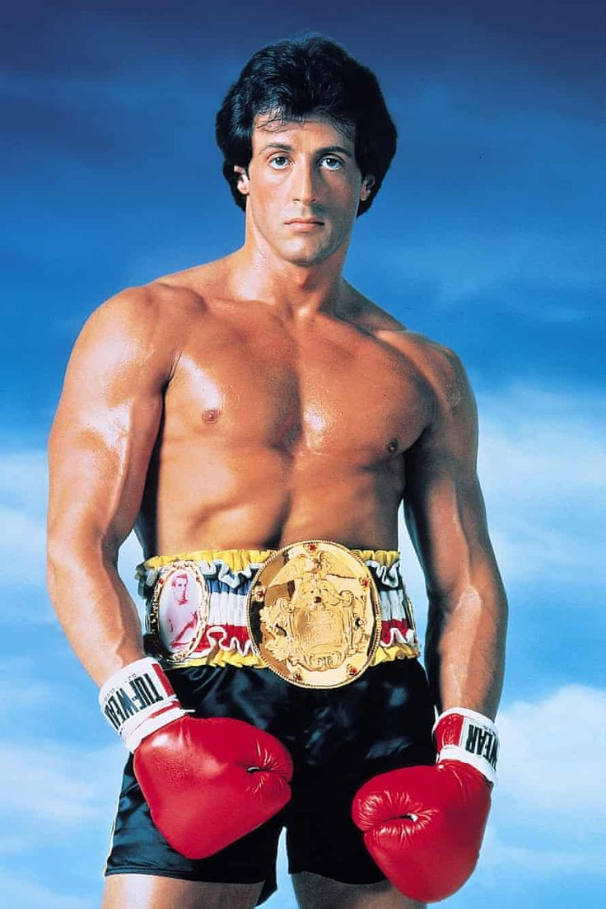
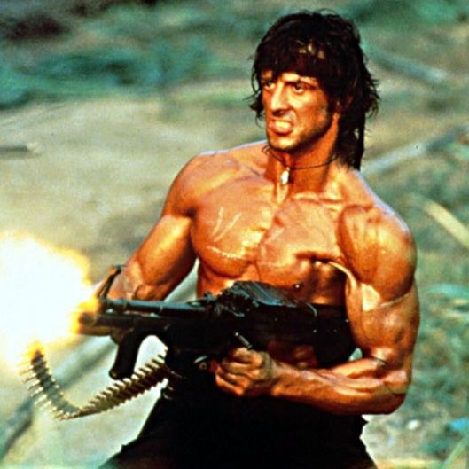
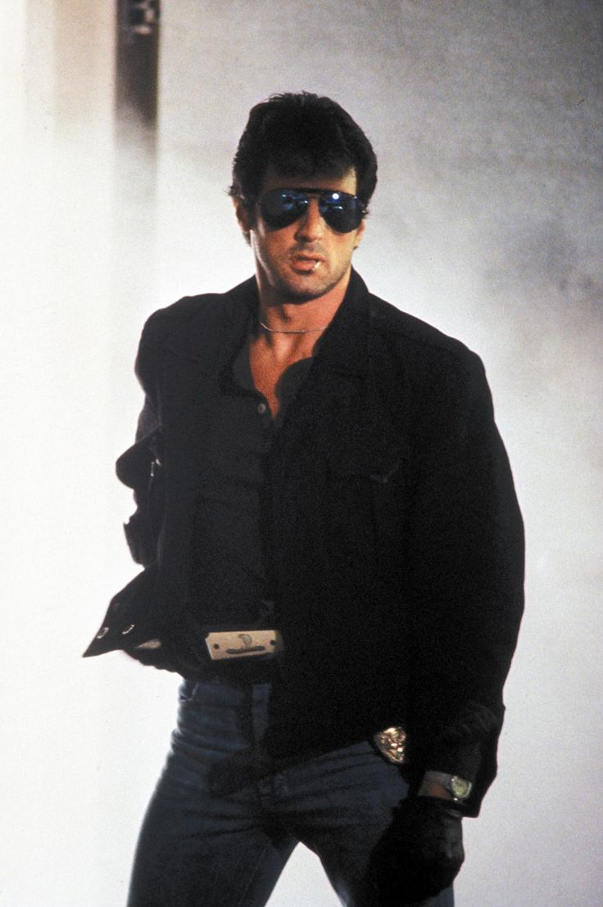
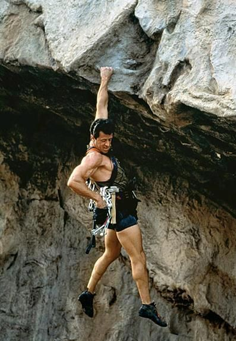
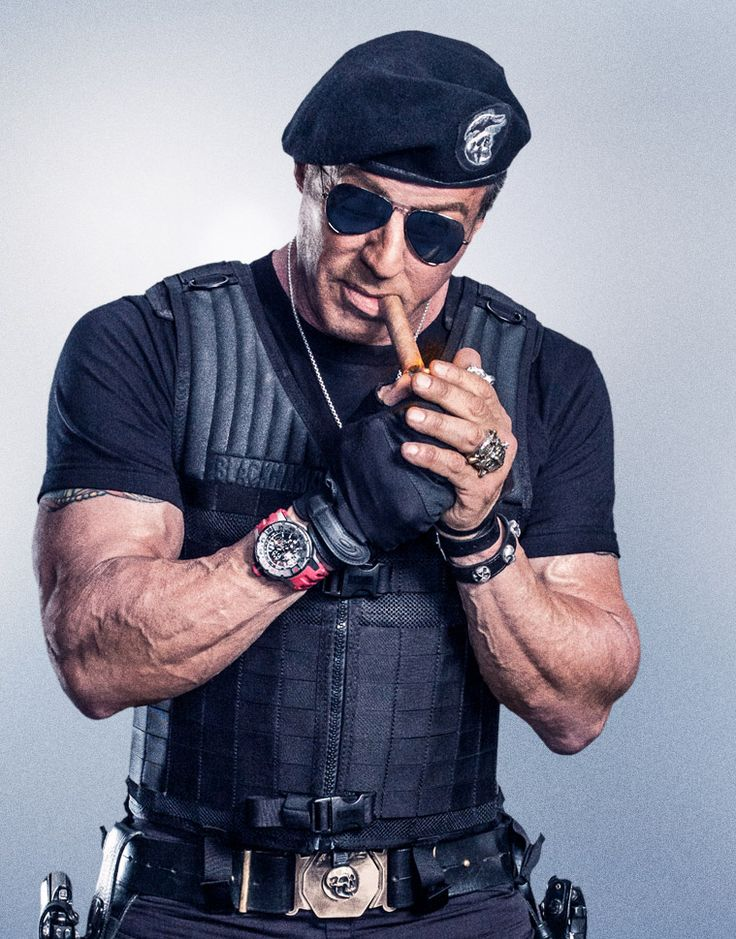

Interpretações
Rocky Balboa
Rocky
Sylvester Stallone interpreta Rocky Balboa, um boxeador amador de Filadélfia que recebe a chance de lutar pelo título mundial de pesos pesados. Ao longo da série, Rocky se transforma de um azarão em um campeão icônico, enfrentando adversidades pessoais e profissionais.
John Rambo
Rambo
Sylvester Stallone interpreta John Rambo, um veterano de guerra do Vietnã altamente treinado que luta contra a injustiça e a opressão. Em cada filme da série, Rambo enfrenta missões perigosas, usando suas habilidades de combate para sobreviver e proteger os inocentes.
Mario Cobretti
Cobra
Sylvester Stallone interpreta Marion "Cobra" Cobretti, um impiedoso policial de Los Angeles especializado em combater crimes violentos. Em "Cobra", ele enfrenta uma gangue de psicopatas liderados pelo "Night Slasher", utilizando métodos extremos para proteger a cidade.
Gabe Walker
Cliffhanger
Sylvester Stallone interpreta Gabe Walker, um experiente alpinista e socorrista que sofre um trauma após a morte de uma amiga durante uma missão de resgate. Em "Cliffhanger", Gabe é forçado a confrontar seus medos quando um grupo de criminosos o coage a ajudar na busca por malas de dinheiro espalhadas nas montanhas.
Barney Ross
Os Mercenários
Sylvester Stallone interpreta Barney Ross, o líder de um grupo de mercenários altamente habilidosos conhecido como "Os Mercenários". Em "Os Mercenários", Barney e sua equipe assumem missões perigosas para eliminar ameaças globais, enfrentando vilões implacáveis e desafios mortais.
Rocky Balboa
Creed

Sylvester Stallone interpreta Rocky Balboa, agora um treinador aposentado, que volta ao mundo do boxe para treinar Adonis Creed, o filho de seu antigo amigo e rival, Apollo Creed. Em "Creed", Rocky passa seus conhecimentos e experiência para ajudar Adonis a alcançar seu potencial, enquanto lida com seus próprios desafios de saúde e envelhecimento.